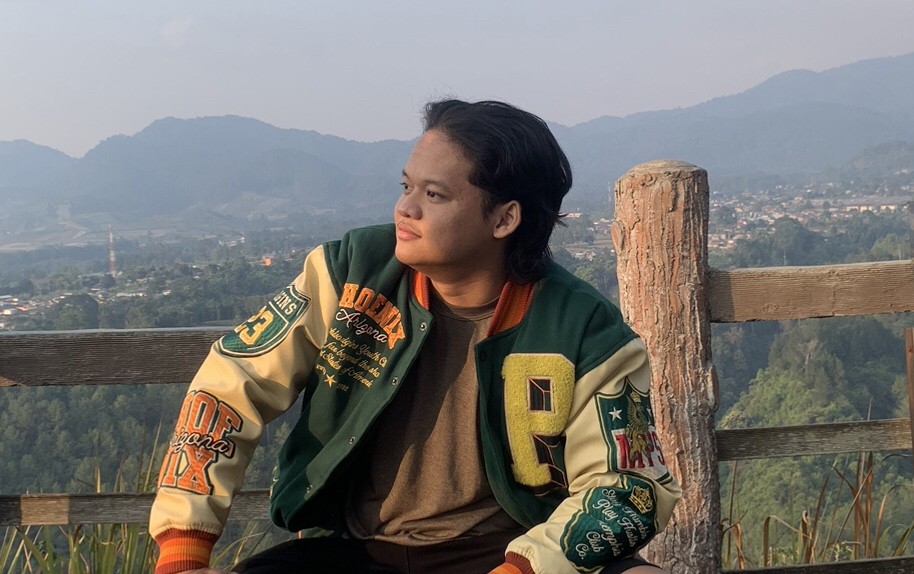

Simon Andrianus Sianipar
About Me
Hello, I'm Simon Andrianus Sianipar from Gunadarma University, and this is the web portfolio I've created.
I live in Tangerang, and my place of birth is Jakarta, December 13, 2003, and you can call me Simon
I have the ability to speak in public, think critically, and I am very happy to help people with a cheerful heart.
I hope that with this portfolio, you can get to know me or my personality more easily.
Achievement
1st Place Winner of the Unlimited Software Building University: Gunadarma 2022 Scientific Article Writing Competition.
2nd Place Winner of the IEC LOL WILD RIFT SEASON 2 REGIONAL JAKARTA Video Games: League of Legends 2020.
3rd Place Winner of the IEC SCHOOL & CAMPUS LOL WILD RIFT Video Games: League of Legends 2020.
Education
GUNADARMA UNIVERSITY '2022 - now'
SMAN 5 TANGERANG KOTA '2019 - 2022'